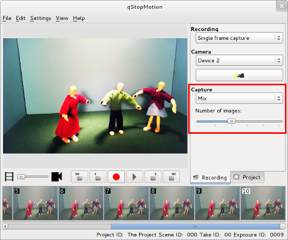
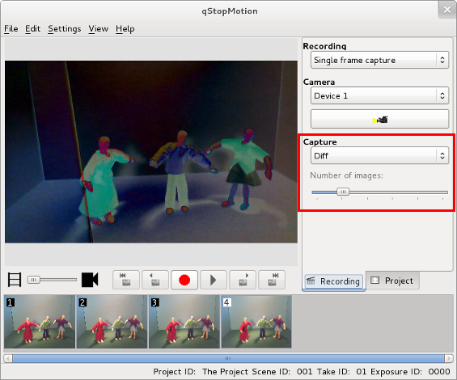

5. Using qStopMotion with your webcamera
The real value of using qStopMotion lies in working directly against a webcamera.
If you have selected a video device you can start the camera by pressing the  (C) button.
(C) button.
Figure 5.1 The Camera menu

| For this to work you have to turn of all other programs using the webcamera. |
When the camera is on you have three modes for viewing the video. These modes have different purposes and are there to assist you in creating your animations.
- Image mixing/Onionskinning (Shortcut: 1)
-
The image mixing is probably the view mode you will be using the most. This mode allows you to view previous pictures (up to five) on top of the camera. This way you can position the figure in relation to the previous frames so that you can create smooth motions.
Figure 5.2 The onionskinning/mixing mode
You can change the number of pictures to view on top of the camera with the ``Number of mixes'' slider on the camera panel.
- Image differentiation (Shortcut: 2)
-
The image differentiation mode is primarly meant as a tool for moving the figure back to a previous position.
It displays the difference between the selected frame and the camera. This way if an object in front off the camera has been involountairly moved (fallen, etc) you can use the differentiation mode, together with the image mixing, to move the object back to its previous position.
This can be done by moving the figure until the picture is black, which means the selected frame and the camera are ``equal''.
Figure 5.3 The differentiation mode

- Playback (Shortcut: 3)
-
The playback mode will continously run the the already recorded frames as an animation with the input from the camera as the final frame.
This way you can see the camera input, which will become the next frame, together with the previous frames as an animation.
Figure 5.4 The playback mode
You can specify how many frame backwards that should be played (up to 50) with the ``Number of images'' slider on the camera panel, and you can set how fast they should played with the FPS chooser on the preview panel.